de3be420 → b4c8fe8e → 5bb23f21 → e9c07040 →
9e3bdcab → 33e56b12) плюс доработки в рабочем дереве: полная диагностика приглашений
сотрудников в ленте офферов диспетчера (краш /offers, карточка + модалка принятия/отклонения,
редизайн уведомления, задокументированный бэкенд-блокер), email в детальной карточке водителя, починка контракта
/admin/trips и /admin/offers (бэкенд сменил PascalCase на snake_case) с переименованием
«Удалить» → «Отменить рейс», отображение названия города до запятой с аббревиатурой административного слова,
и повторное расследование Excel-экспорта — первый сегодняшний фикс починил обрезание колонок, но
китайское контекстное меню оказалось не исправлено; корень найден в самом вендорном пакете и исправлен по-новому.
Отдельно — рефакторинг файловой архитектуры раздела компании (устранение дублирования и мёртвого кода) и два
смерджированных PR коллеги. Все скриншоты ниже — реальный Playwright-прогон на живом staging.
Бэкенд обновил уведомление и офферное сообщение о приглашении в компанию для CM/DM, но диспетчер не видел
приглашение в /offers, хотя счётчик показывал «1 входящий». Полное расследование /decider
выявило цепочку из трёх находок.
/offers. GET /v1/dispatchers/offers/all — полиморфная лента: строки
приглашений приходят с cargo: null и offer: null, а тип
SentOfferListItem объявлял оба поля не-nullable. item.cargo.id падал с
TypeError, ErrorBoundary ловил и показывал «Что-то пошло не так». Поля сделаны nullable,
строки-приглашения отделены предикатом isOfferListItemWithCargo, приглашения — отдельным
предикатом isCompanyInvitationOffer (по offer_kind === 'company_invitation').CompanyInvitationOfferCard) с полями компании/роли/статуса/дат и модалкой Accept/Decline.localStorage['sarbon_company_app_token'] → null,
подтверждено в реальной сессии). Путь принятия, который отвечает на staging
(/v1/invitations/:id/accept), требует именно company-токен — то есть чтобы вступить в компанию,
нужно уже быть её пользователем: замкнутый круг для приглашённого. Путь, который подходит по модели продукта
(POST /v1/dispatchers/invitations/{accept,decline}), уже развёрнут в production и не
требует company-сессии — но ему ни разу не передаётся token приглашения ни в ленте офферов, ни в
пуше. Полная диагностика, включая пробы staging/production по HTTP-кодам (404 против 401) и разбор реальных
payload'ов — в company-invitation-offers-backend-ticket.md в корне репозитория.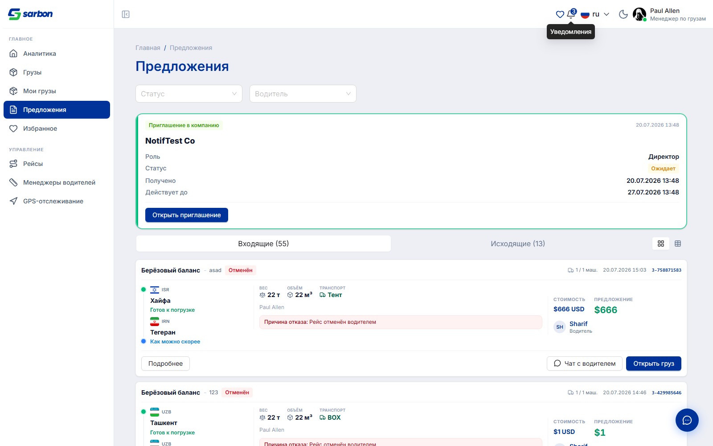
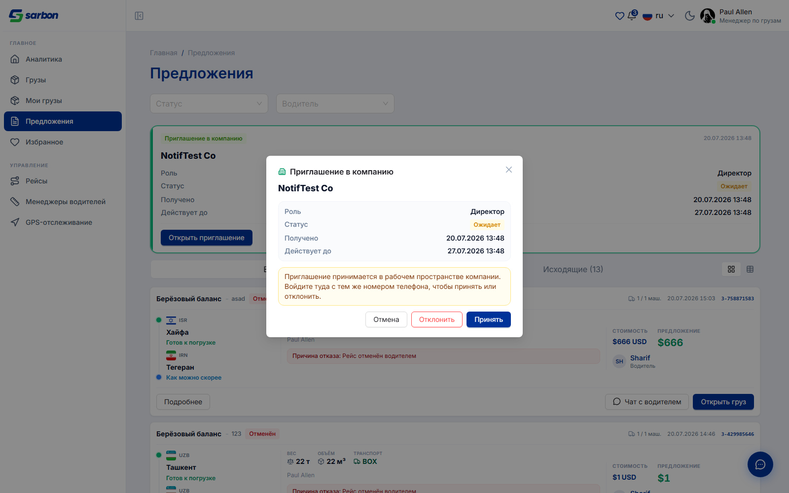
token в ответе бэкенда запрос гарантированно вернёт
401 Отсутствует X-User-Token — фронтенд обрывает клик до сети и показывает пояснение вместо
бесполезного round-trip. Это не UX-заглушка «на будущее», это единственный честный вариант до правки бэкенда.
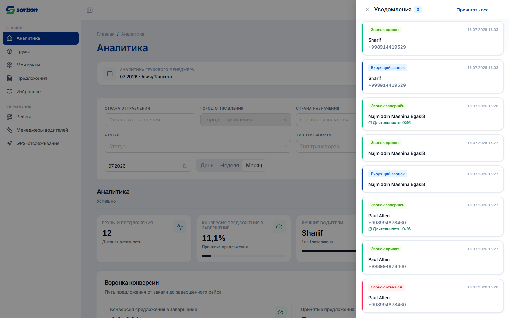
Тикет SARB-DISP: GET /v1/dispatchers/drivers/{id} отдаёт email, но детальная страница
водителя его не показывала — поле было объявлено в типе, но не выведено ни одним компонентом. Добавлена строка
«Email» рядом с телефоном, тем же паттерном (readField/renderValue), с тем же
фолбэком «Нет данных» для пустого значения — без валидации формата, значение выводится как есть.
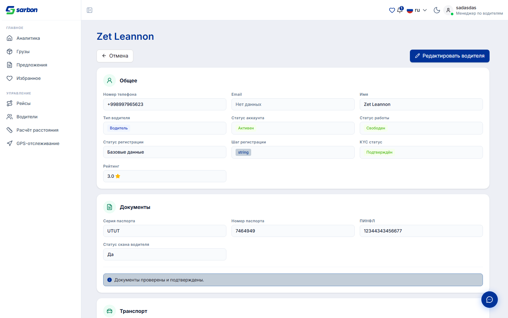
Бэкенд сменил формат ответа /admin/trips и /admin/offers с PascalCase на snake_case
без предупреждения — все поля (Status, CreatedAt, AgreedPrice и т.д.)
разом стали «нет данных», хотя данные реально приходили. Добавлен единый нормализатор
normalizeAdminRowKeys/pascalToSnake на границе запроса (adminRowFields.ts),
применённый и к чтению, и к местам, где старые PascalCase-ключи молча писались обратно в payload. Заодно —
кнопка удаления рейса на самом деле является мягкой отменой (soft-cancel на бэкенде), поэтому она переименована
в «Отменить рейс» (иконка Trash2 → Ban), включая все 15 локалей ключей messages.delete* →
.cancel*.
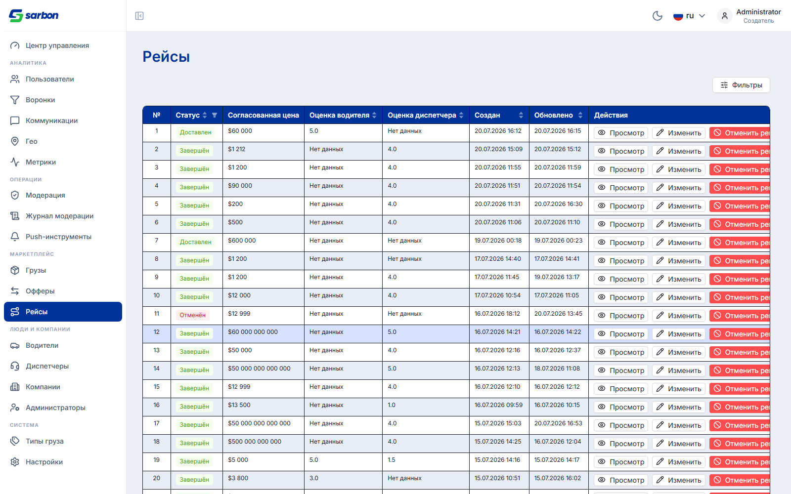
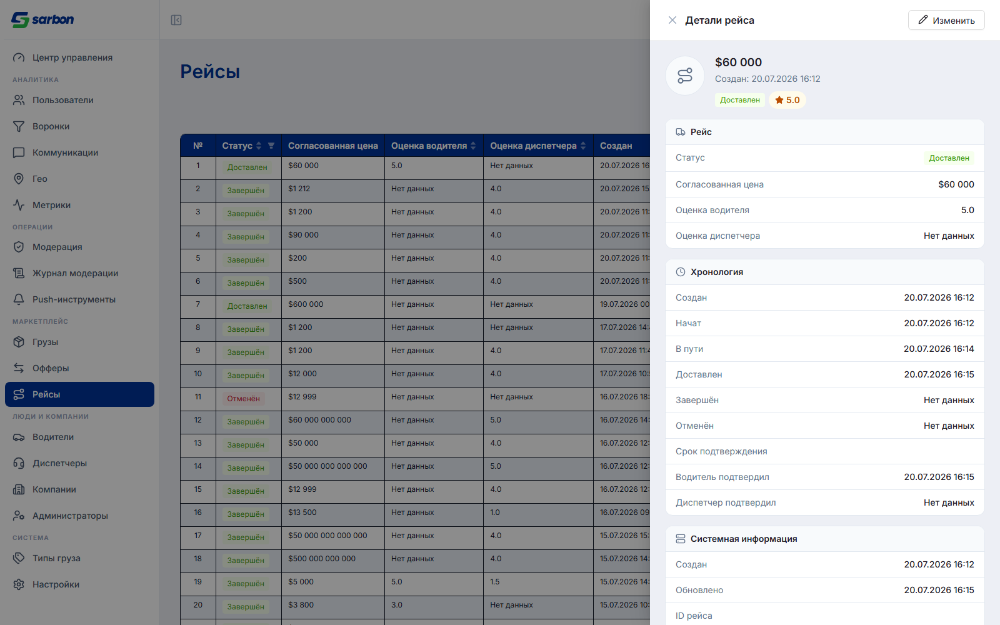
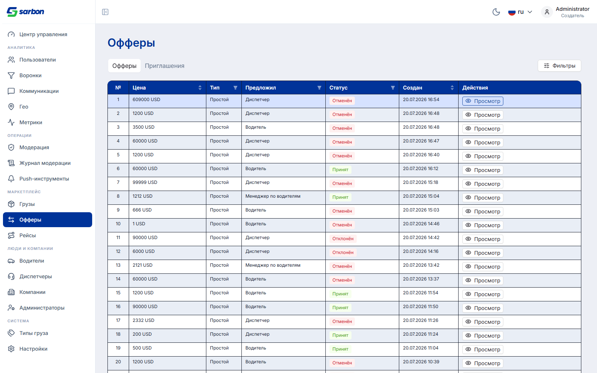
Во всех местах, показывающих адрес отправления/назначения (my-cargos, all-cargos, offers, админка), теперь
выводится название до первой запятой вместо либо голого города, либо полного адреса. По итогам двух уточнений:
административное слово (область, viloyati, region) не отбрасывается, а
аббревиатурируется (область → обл., viloyati → vil.), а ведущий маркер города
(г. Ташкент) — отбрасывается. Логика — cityNameFromAddress/abbreviateGeoWords
в addressDisplay.ts, подключена через summarizeCargoRoute ко всем спискам разом.
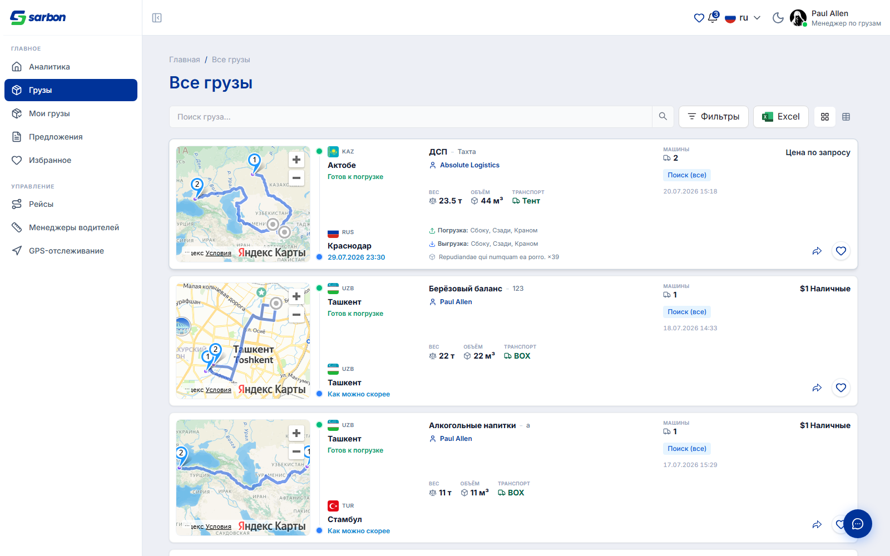
Экспорт из /all-cargos (кнопка «Excel») открывает вкладку XLSX прямо в приложении через встроенный
в вендорный пакет excel-viewer движок x-data-spreadsheet. Жалоба была на два симптома;
оба были «исправлены» одним коммитом сегодня утром — но при съёмке скриншотов для этого отчёта выяснилось, что
только первый симптом был реально устранён.
row.len из данных,
но никогда не передаёт col.len, поэтому сетка молча падала на дефолт в 26 колонок. Теперь
col.len вычисляется явно (buildExcelViewData/resolveGridColumnCount) —
видно на скриншотах ниже: колонки идут далеко за K, показаны реальные данные вплоть до «Обновлён»/«Нужно машин».x_spreadsheet.locale(lang) — выглядит как правильный API и даже задокументирован пакетом как
таковой. При живой проверке через Playwright меню всё равно оказалось на китайском. Трассировка минифицированного
бандла показала: реальный текстовый lookup идёт через внутренний хелпер $(path, dict), который
полностью игнорирует состояние, которое устанавливает .locale(), а вместо этого на каждый
вызов заново читает document.documentElement.getAttribute('data-excel-viewer-lang'), по умолчанию
падая на zh_cn, если атрибут не выставлен. Подтверждено вручную: даже ручной вызов
.locale('en') прямо перед правым кликом ничего не менял — меню оставалось китайским. Настоящий
фикс — выставлять этот DOM-атрибут (renderSheet() в ExcelViewer.tsx), что и было
сделано сейчас, с записью в bug.md о ложном первом фиксе.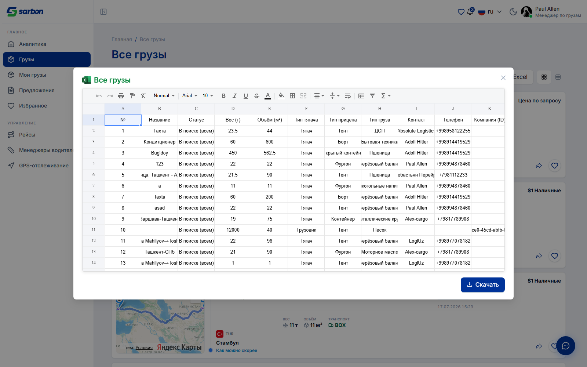
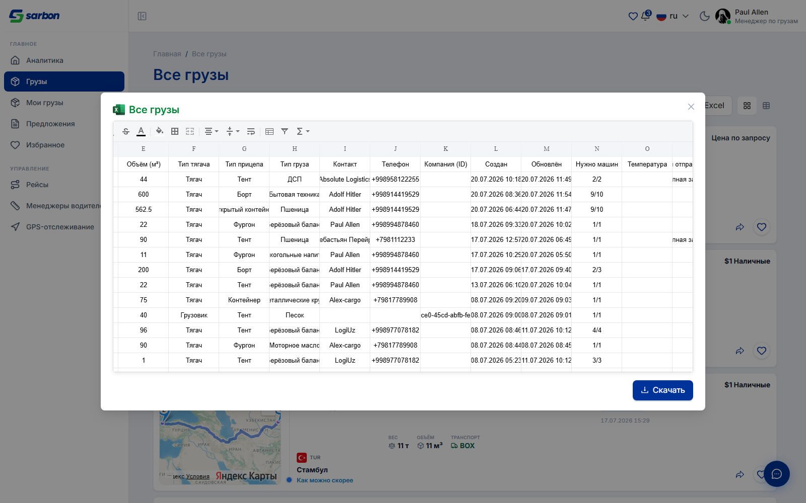
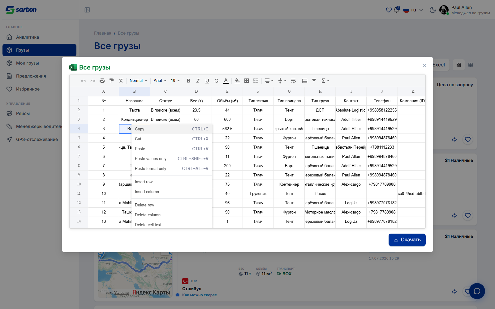
По результатам /arch-аудита файловой и кодовой архитектуры кабинета компании (tooling-backed —
madge/knip) выполнен EVOLVE-проход по трём находкам без изменения поведения:
toRecord, toRecordArray,
getEnvelopeData, getPageItems, prettifyKey, …) вынесены из
adminHelpers.ts в новый src/utils/recordParsing.ts; admin-модуль ре-экспортирует их
для 42 существующих вызовов — ноль изменений на стороне потребителей.parseCompanyEmployeesResponse/buildManagerOptions/
ManagerOption переехали из companyTrips.ts в companyEmployees.ts, где
им и место (там же остальная логика сотрудников); shortId обобщён и перенесён в
formatters.ts.COMPANY_TYPES из companyCreate.ts удалён
(нулевые потребители подтверждены, включая тесты).
Два PR (Abdumaliks) влиты в staging сегодня — не моя работа, но раз в этот же день, фиксирую по
просьбе учитывать мерджи:
GET /v1/admin/cargo/{id}).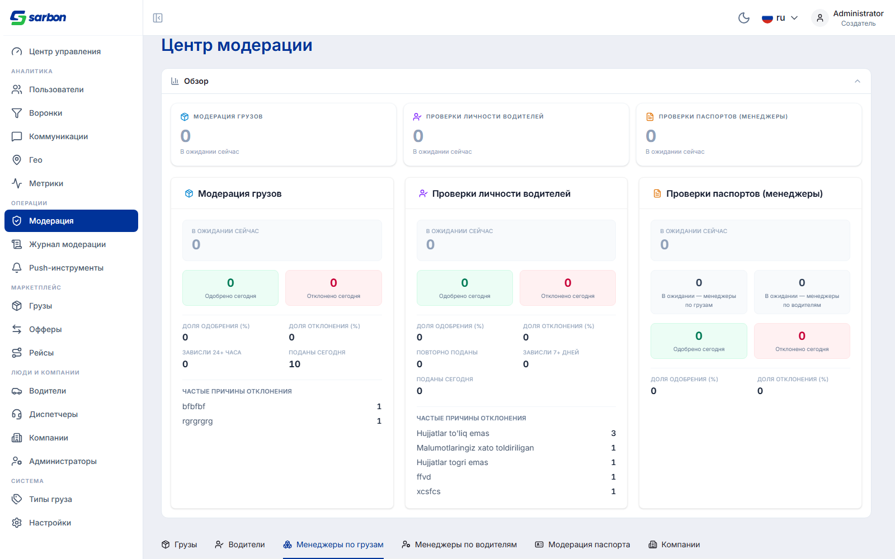
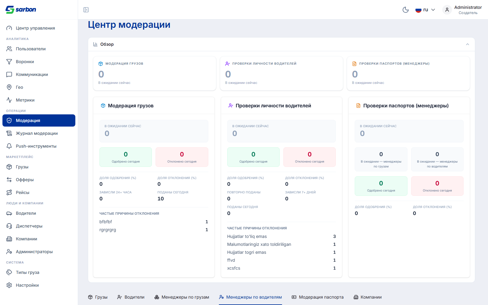
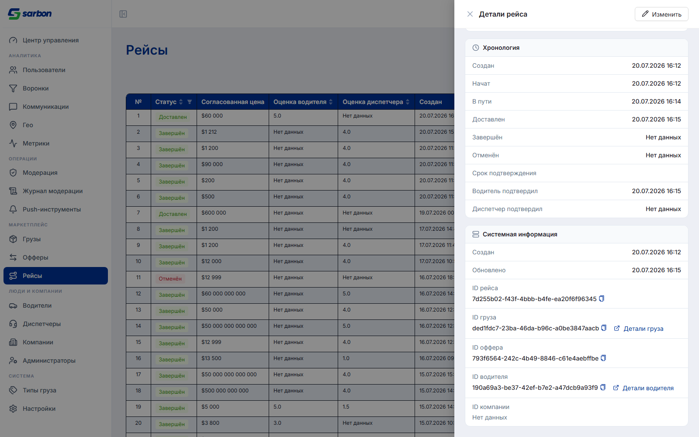
| Гейт | Результат |
|---|---|
tsc -b (полная проверка типов проекта) | exit 0 |
vitest run --no-file-parallelism | 182/182 файлов · 2023/2023 тестов |
eslint --max-warnings 0 | чисто (весь проект) |
pnpm build | exit 0 |
| Локали | 15/15 (driversPage.emailLabel, tripNotifications.invitationOffer.*, admin.pages.trips.cancel.*) |
| Excel-фикс перепроверен вживую после первичного (неполного) фикса | right-click на реальном клике — English, не ручной оверрайд |
| Company-invitation accept/decline | блокировано бэкендом — тикет в company-invitation-offers-backend-ticket.md |
bug.md | запись о повторно расследованном Excel-фиксе добавлена |
de3be420 «handout» — накопленная уборка (снятие устаревших тикет-файлов, bug.md).b4c8fe8e «name , comma addition» — название города до запятой + аббревиатура
(addressDisplay.ts), архитектурный рефакторинг раздела компании
(recordParsing.ts, companyEmployees.ts), обновление CLAUDE.md/ARCHITECTURE.md.5bb23f21 «excel bug fix» — исправление обрезания колонок (excelSheetData.ts);
китайское меню — доисправлено сегодня же в рабочем дереве после повторной проверки.e9c07040 / 9e3bdcab «trips» — snake_case-нормализация
/admin/trips+/admin/offers (adminRowFields.ts), переименование
«Удалить» → «Отменить рейс» во всех 15 локалях.33e56b12 «last changes of notification» — редизайн строки уведомления о приглашении
(NotificationRow.tsx)./offers на приглашениях (cargoTypes.ts, OffersPage.tsx),
карточка + модалка приглашения (CompanyInvitationOfferCard.tsx), email в карточке водителя
(DriverDetailsPage.tsx), настоящий фикс Excel-локали (ExcelViewer.tsx),
бэкенд-тикет по приглашениям.origin/staging — PR #297 (табы модерации менеджеров) и PR #298 (кликабельные
ID в деталях рейса + фикс детали груза), оба от коллеги.